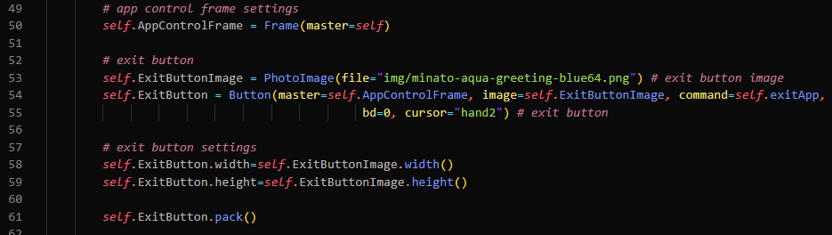
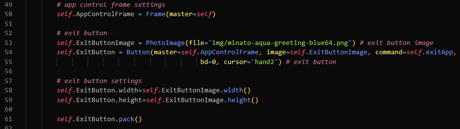

Minato Aqua Maid App est une application python que j'ai réalisé afin de découvrir TKinter et la programmation d'interfaces utilisateur en général. Elle consiste en une simple to-do list sauvegardée localement dans un fichier txt, et un lecteur de sons aleatoire.
J'ai utilisé Python et ses nombreuses bibliothèques; os pour le fichier de to-do list, threading afin de joueur les sons aléatoires en fond et pygame pour jouer les sons. Ce projet a également été l'occasion pour moi d'apprendre la structure type de fichiers pythons en utilisant un dossier modules, un fichier core.py, le fichier __init__.py, et j'ai créé un fichier utility.py afin de définir des methodes spécifiques que je n'ai pas trouvé en ligne.

J'ai utilisé TKinter afin de faire l'interface de l'application. J'ai donc créé des fenêtres avec la classe Tk, des frames avec la classe Frame et des widgets comme des bouttons, labels...
 

J'ai utilisé Git et GitHub afin de gérer le projet et versionner l'application..